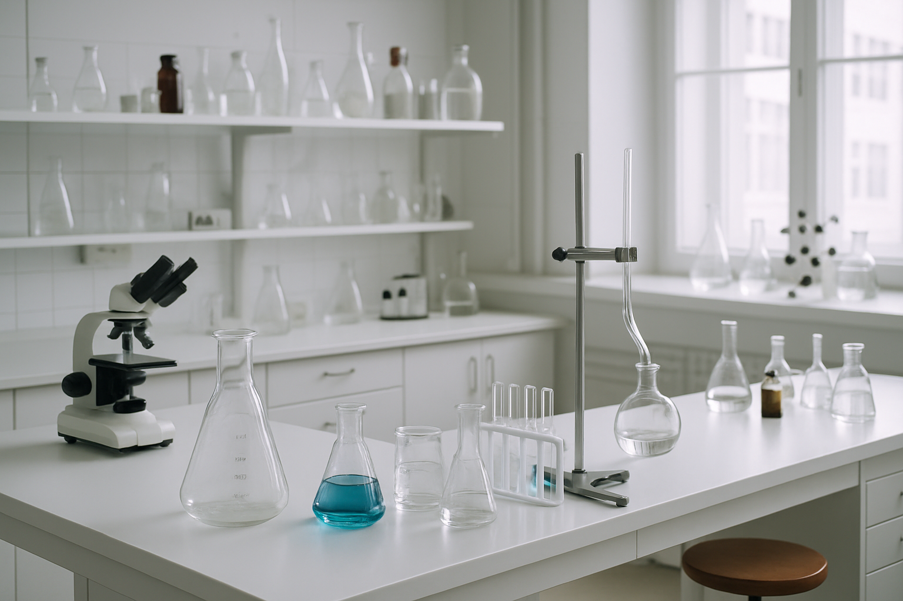

Laboratório de
Cromatografia
(LabCroma)
Metodologias analíticas cromatográficas avançadas para aplicações ambientais, alimentares e produtos naturais
Saiba mais

Metodologias analíticas cromatográficas avançadas para aplicações ambientais, alimentares e produtos naturais
O Laboratório de Cromatografia desenvolve pesquisas avançadas em metodologias analíticas cromatográficas para separação, identificação e quantificação de compostos em matrizes complexas. Nosso foco está em aplicações ambientais, de alimentos e em produtos naturais, sempre buscando inovação e sustentabilidade.
Trabalhamos com técnicas de cromatografia líquida (HPLC), cromatografia gasosa (GC) e espectrometria de massas, desenvolvendo metodologias validadas conforme protocolos internacionais (ICH, ANVISA, EPA) para garantir confiabilidade analítica.
Pestícidas em água e alimentos
Análises de traços e contaminantes
Metabolômica e quimiometria
Tratamento de água e efluentes
Metodologia cromatográfica para análise de compostos emergentes em matrizes ambientais
Desenvolvimento de novo método HPLC-MS para análise de produtos naturais
Validação de método cromatográfico conforme protocolos internacionais

Formado em Química Industrial pela Universidade Federal do Maranhão (UFMA, 1991), doutor em Química Analítica pela Universidade de São Paulo (USP, 1997), Instituto de Química de São Carlos (IQSC). Atualmente é professor titular da Universidade Federal do Ceará (UFC). Publicou artigos (186) em periódicos científicos, capítulos de livros (20) e livros (09). Possui experiência na área de Química Analítica, com ênfase no Desenvolvimento de Métodos Cromatográficos (análise de resíduos de pesticidas em água e alimentos); Química Ambiental (análises de traços); Adsorção (remoção de poluentes de efluentes aquosos utilizando adsorventes naturais); Processos Oxidativos Avançados (tratamento de água e efluentes).